12-MONTH ROLLING uses rolling window aggregation CURRENT MONTH uses raw month-by-month values RAW CLIMATE uses continuous (non-thresholded) climate values
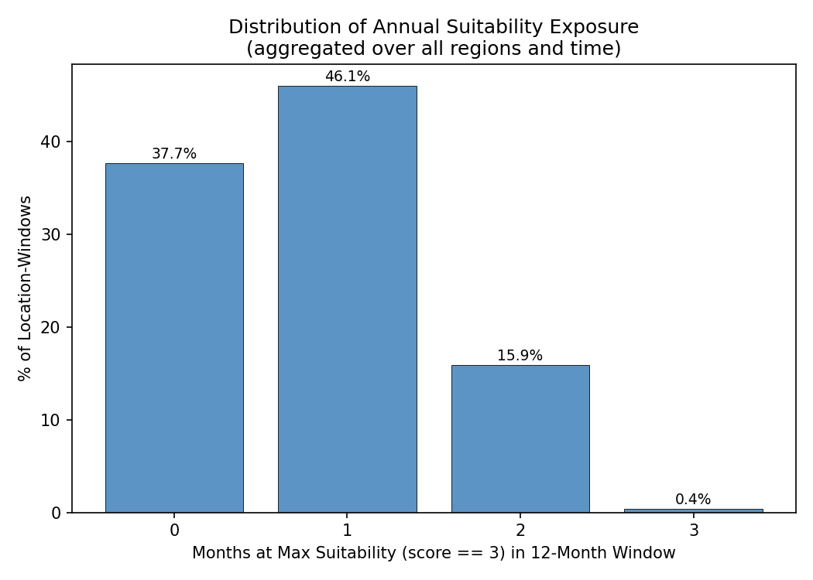
X-axis: Number of months in the 12-month rolling window where all thresholds were simultaneously met (score == max). Each bar represents one integer value (0, 1, 2, …).
Y-axis: Percentage of all (location, window-end) pairs that had that many suitable months.
Purpose: Shows the distribution of annual suitability exposure across all location-windows — how often is the location fully suitable for 0, 1, 2, … months per year?
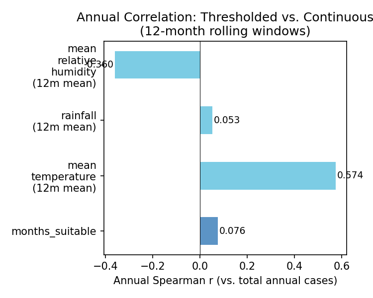
Structure: Horizontal bar chart — one bar per predictor. Blue bar = months_suitable (thresholded count, from primary analysis). Light blue bars = 12-month mean of each raw (un-thresholded) climate variable over the same rolling windows.
All correlations are Spearman r vs. total annual incidence across the same (location, window) pairs.
Purpose: Tests whether thresholding loses information at the annual scale. If raw climate means have higher r than months_suitable, the threshold-and-count approach discards predictive signal.
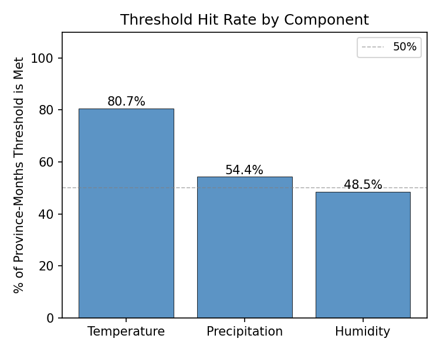
Structure: Bar chart — one bar per component threshold. Height = percentage of all province-months in which that threshold condition is met. Dashed reference line at 50%.
Purpose: Shows how selective each threshold is. A threshold met in >80% of months adds little discrimination; one met in <20% is highly restrictive and will rarely allow the score to reach its maximum.
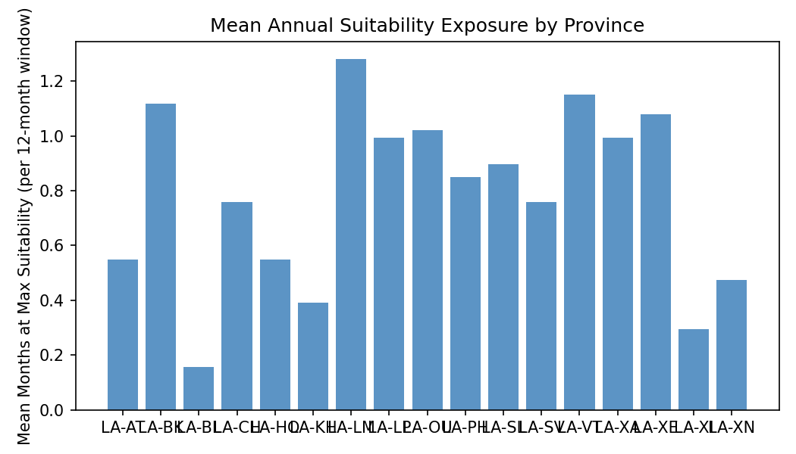
Structure: Bar chart — one bar per province. Height = mean number of months at max suitability per 12-month rolling window for that province.
Purpose: Shows which provinces experience more vs. fewer fully-suitable months on average, giving a geographic profile of annual suitability exposure.
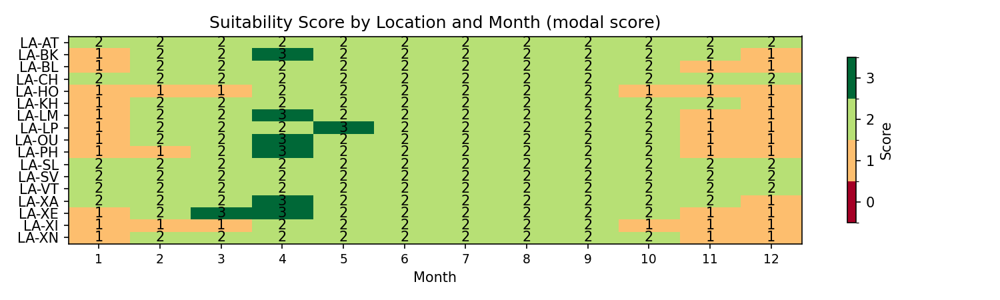
Structure: Heatmap — rows = provinces, columns = calendar months (1–12), cells = modal composite suitability score for that province-month combination. Colour: green = high score (all thresholds met), red = low score (no thresholds met). Exactly 4 discrete colour levels.
Purpose: Reveals the seasonal pattern of the model — when does the model fire across provinces, and is there consistent cross-province behaviour in particular months?
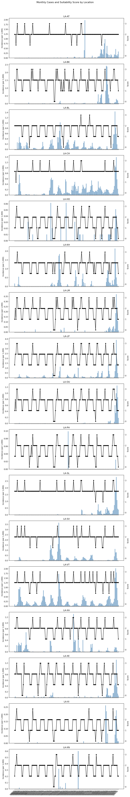
Structure: One panel per province. X-axis = calendar time. Bars (steelblue) = monthly incidence. Line (right axis) = composite suitability score (0 to max).
Purpose: Diagnostic — shows how the model score and observed incidence co-vary within each province over time. Not a formal correlation test.
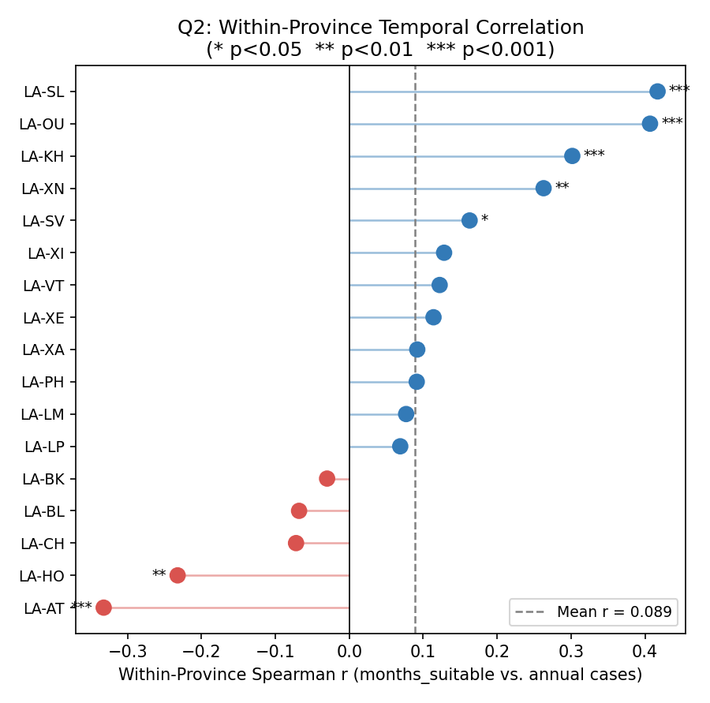
Structure: Ranked lollipop dot plot — one dot per province, sorted by within-location Spearman r (highest to lowest). X-axis = Spearman r between rolling months_suitable and rolling total incidence within that province. Dashed vertical line at zero; dashed horizontal line at mean r across all provinces. Significance stars (* p<0.05, ** p<0.01) shown next to each dot.
Purpose: Answers Q2: within a given province, does year-to-year variation in annual suitability exposure track year-to-year variation in annual disease burden? Each province's r indicates whether more suitable months in a window tends to coincide with more cases in that province.
Method: Same 12-month rolling windows as primary analysis. Within-province Spearman r computed separately for each province across its ~145 rolling windows.
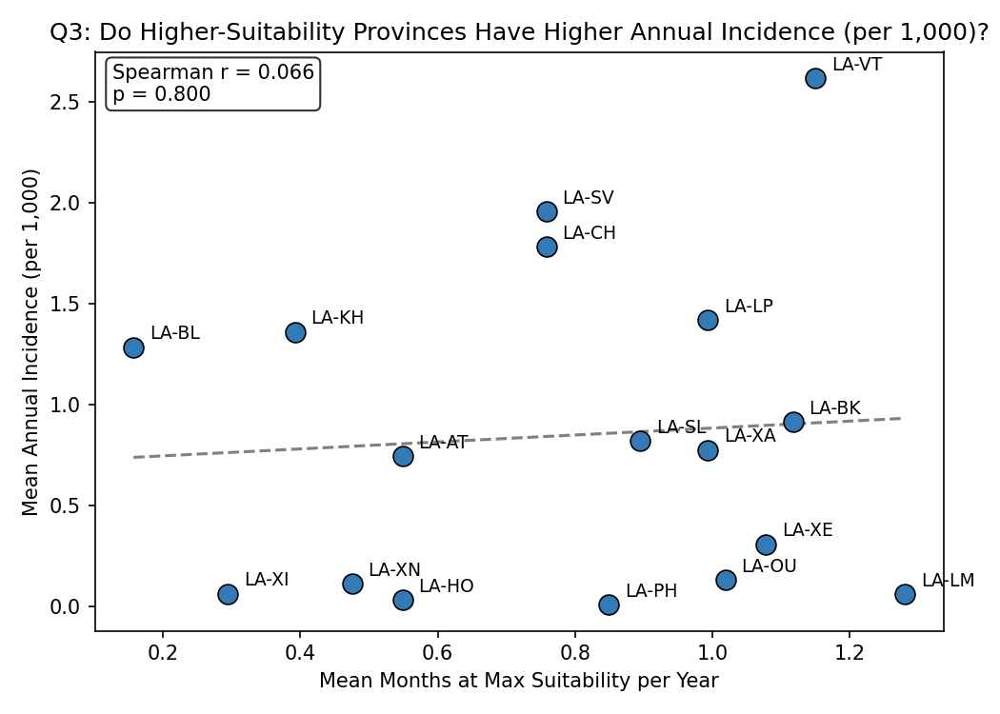
Structure: Scatter — one point per province. X-axis = mean months at max suitability per 12-month window (averaged over all windows for that province). Y-axis = mean annual incidence (sum of monthly incidence over each window, then averaged). OLS trend line. Spearman r annotated.
Purpose: Answers Q3: do provinces that experience more fully-suitable months on average also have higher annual disease burden? This is the between-province (spatial) counterpart to Q2.
Method note: Uses the same x-axis concept as Q2 (months_suitable) so Q2 and Q3 are directly comparable — within-province vs. between-province variation along the same predictor.
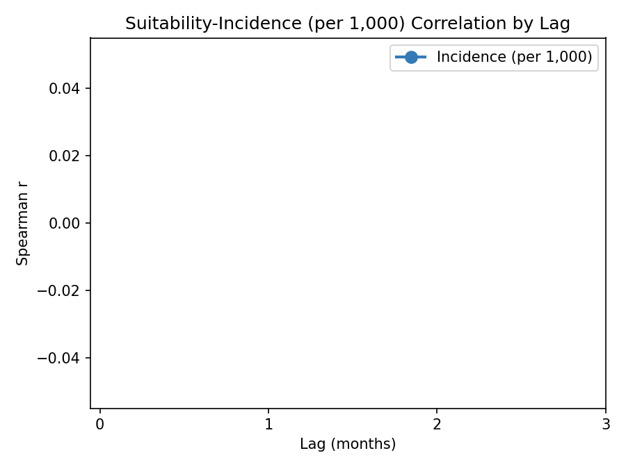
Structure: Line plot of composite score Spearman r vs. lag (0–3 months). Each point shows the correlation when climate conditions at month T−lag are compared to disease cases at month T. Values annotated at each lag.
Purpose: Identifies the temporal offset that best aligns the suitability signal with observed disease burden, accounting for mosquito development time, pathogen incubation, and reporting delay.
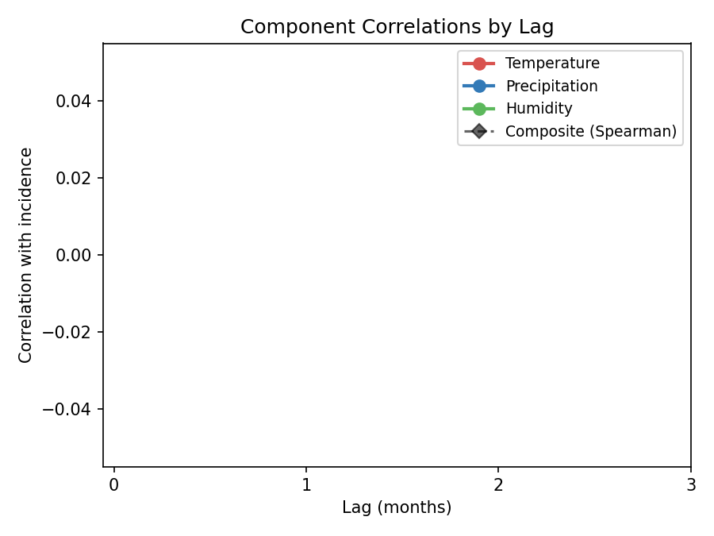
Structure: Line plot of per-component point-biserial r vs. lag (0–3 months), plus composite Spearman r (black dashed). Each component's contribution to the lagged signal is shown separately.
Purpose: Shows whether individual components have different optimal lags — e.g., temperature may peak at a different lag than precipitation.
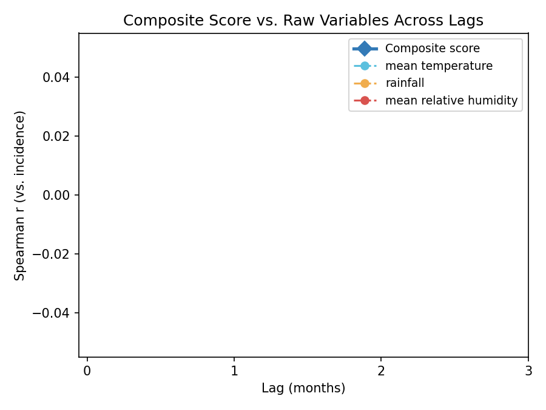
Structure: Line plot comparing composite score Spearman r (blue solid) to raw continuous climate variable Spearman r (dashed lines) across lags 0–3.
Purpose: Tests whether thresholding loses information at the monthly level across all lags. If raw continuous variables consistently outperform the thresholded composite, the threshold-and-count approach discards predictive signal at every lag.
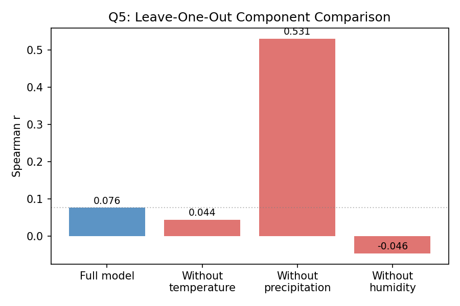
Structure: Bar chart — full model annual Spearman r (blue) compared to the r obtained when each component is removed in turn (red bars). Uses the same 12-month rolling window primary analysis for all bars.
Purpose: Identifies which components help vs. hurt the primary annual correlation. A red bar higher than the blue bar means removing that component improves the correlation — that component is a suppressor in this dataset.
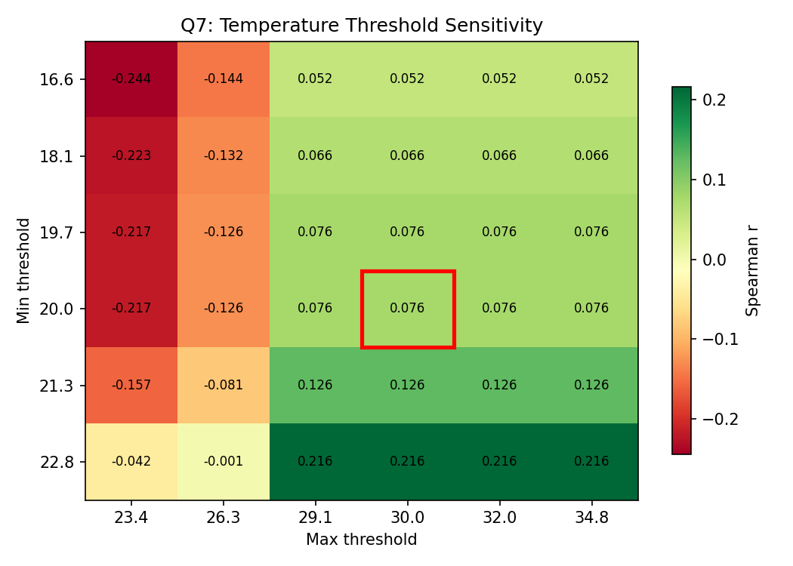
Structure: 2D heatmap — rows = minimum temperature threshold, columns = maximum temperature threshold. Each cell = Spearman r of the full 12-month rolling analysis run with those thresholds. Red box = original thresholds. Sweep ranges derived from the data distribution.
Purpose: Shows how sensitive the primary annual correlation is to the specific temperature threshold values, and whether the original thresholds are empirically optimal for this dataset.
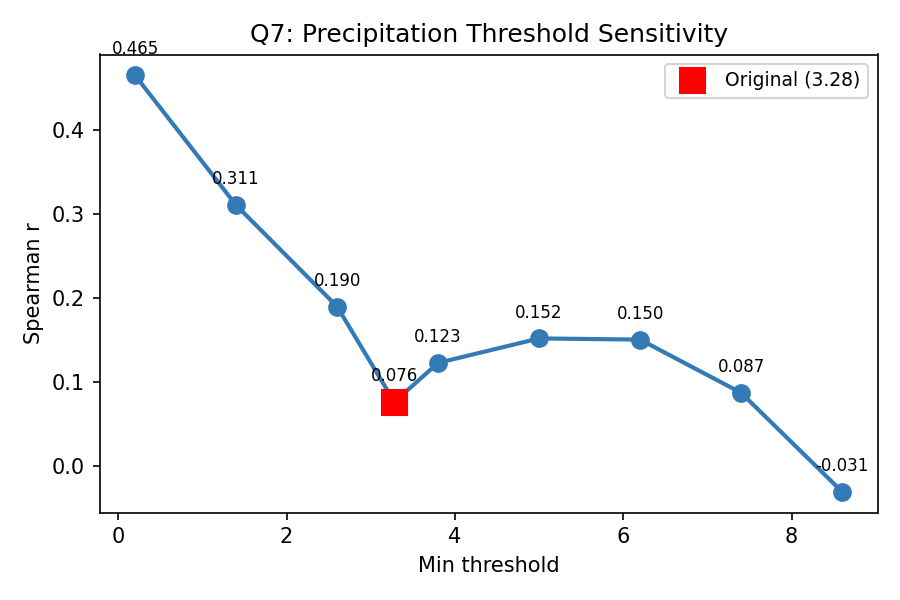
Structure: 1D line plot — x-axis = minimum rainfall threshold (one-sided: no upper cap), y-axis = Spearman r. Sweep range derived from the actual data distribution so values are unit-correct regardless of mm/day vs. mm/month. Original threshold marked.
Purpose: Shows how the annual correlation changes as the rainfall threshold is raised or lowered. Because precipitation is one-sided (lower bound only), a single sweep suffices.
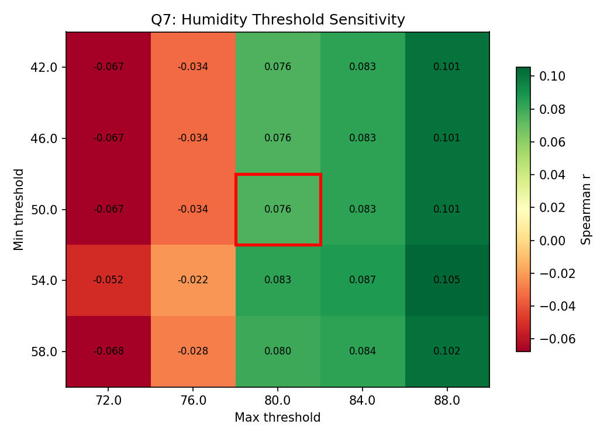
Structure: 2D heatmap — rows = minimum humidity threshold, columns = maximum humidity threshold. Each cell = Spearman r. Red box = original thresholds. Sweep ranges chosen to centre the original thresholds in the middle of the grid (±8 pp around each).
Purpose: Shows how sensitive the annual correlation is to the humidity threshold window. Particularly important because the humidity distribution differs substantially between the dataset the thresholds were calibrated on (Uganda) and the target dataset.
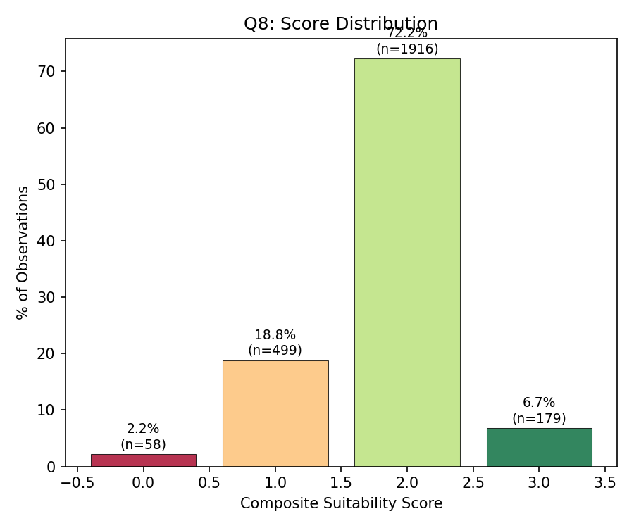
Structure: Bar chart — one bar per composite score level (0 to max). Height = percentage of all province-months at that score. Each bar labelled with percentage and count.
Purpose: Shows whether the score discriminates or whether most observations collapse into a single category. A model where most observations land in a middle score cannot usefully separate high from low risk months.
Auto-generated by visualize.py — Model: Lao PDR Malaria Suitability (Uganda DHIS2 thresholds, unit-adjusted)